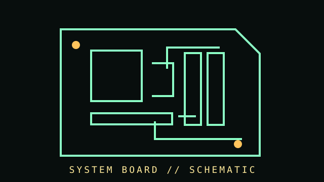

[ SUBCATEGORY DIRECTORY // 7 FILES // 78 PART RECORDS ]
Browse motherboards subcategories
Each subcategory has its own page and lists individual part records. Open a file to browse its cataloged components.
Browse individually cataloged parts and their dedicated identification, compatibility, and source notes.
OPEN SUBCATEGORY FILE →SUBCATEGORY FILE // 17 PART RECORDSLegacy Intel desktop platformsBrowse individually cataloged parts and their dedicated identification, compatibility, and source notes.
OPEN SUBCATEGORY FILE →SUBCATEGORY FILE // 11 PART RECORDSEnthusiast Intel platformsModel-specific boards from X58 through Z170 with revision-matched CPU and firmware notes.
OPEN SUBCATEGORY FILE →SUBCATEGORY FILE // 13 PART RECORDSIntegrated and compact boardsBrowse individually cataloged parts and their dedicated identification, compatibility, and source notes.
OPEN SUBCATEGORY FILE →SUBCATEGORY FILE // 11 PART RECORDSModern AMD platformsBrowse individually cataloged parts and their dedicated identification, compatibility, and source notes.
OPEN SUBCATEGORY FILE →SUBCATEGORY FILE // 09 PART RECORDSAMD Socket platformsSocket A through AM3+ desktop boards with model-specific firmware and CPU support records.
OPEN SUBCATEGORY FILE →SUBCATEGORY FILE // 12 PART RECORDSWorkstation and server boardsMulti-socket workstation and server boards documented by exact model, revision and firmware.
OPEN SUBCATEGORY FILE →[ COMPONENT RECORD // SYSTEM BOARD ]
Mother-
boards.
The motherboard connects the processor, memory, expansion cards, storage, power, and external I/O. The board's socket, chipset, firmware, and exact revision define compatibility.

CLASS RECORD: desktop system boards. For exact compatibility, use the board vendor's CPU list, memory QVL, manual, and support page for the printed model and revision.
Reference specifications
| Common sizes | ATX 305 × 244 mm; microATX up to 244 × 244 mm; Mini-ITX 170 × 170 mm. Chassis and board documentation determine actual mounting support. |
|---|---|
| CPU interface | Socketed processor interface, generation-specific. Same physical socket does not guarantee BIOS or chipset compatibility. |
| Memory | DDR type, slot count, supported capacity, speeds, ECC behavior, and validated configurations are board/CPU/firmware-specific. |
| Expansion & I/O | PCI Express lanes/slots, M.2 sockets, SATA ports, USB generations, network/audio controllers, and front-panel headers vary widely. |
Identification & compatibility
- Record the exact model and board revision printed on the PCB; visually similar boards can use different firmware and connectors.
- Check CPU support list and minimum BIOS version before installation. A board may require a supported older CPU or vendor flashback function to update.
- Match RAM generation: DDR4 and DDR5 modules are mechanically and electrically incompatible.
- Read the manual for M.2/SATA lane sharing, PCIe slot wiring, fan-header limits, memory population order, and clear-CMOS procedure.
- Use ESD-safe handling, inspect for bent socket contacts and bulging/leaking capacitors, and do not power a board with loose conductive screws beneath it.
Often missed board components
BIOS/UEFI flash chips, embedded controllers, VRM stages, clock generators, TPM headers/modules, Wi-Fi antennas, backplanes, and riser boards are part of a complete system-board record.
Sources & further reading
- FormFactors.org — ATX specificationMechanical and interface reference; consult the version relevant to the hardware.
- Intel — Desktop motherboard form factorsOverview of board dimensions and form-factor families.
- Intel — Find compatible processors for Intel desktop boardsIllustrates why model-level support lists and BIOS versions matter.